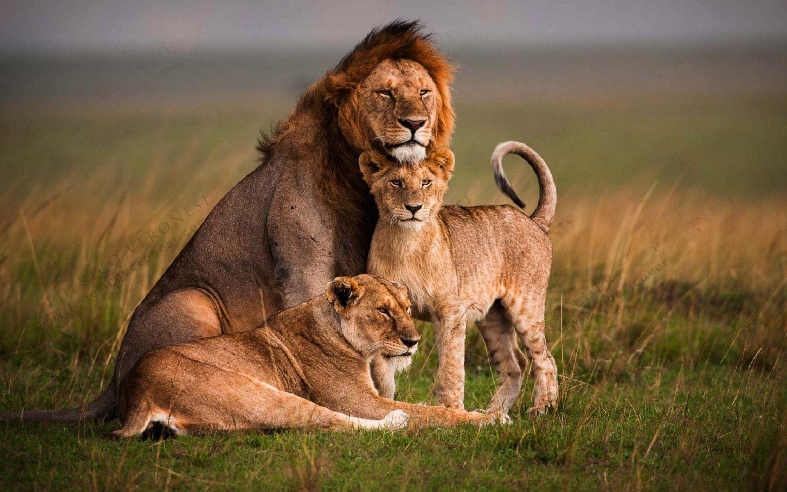
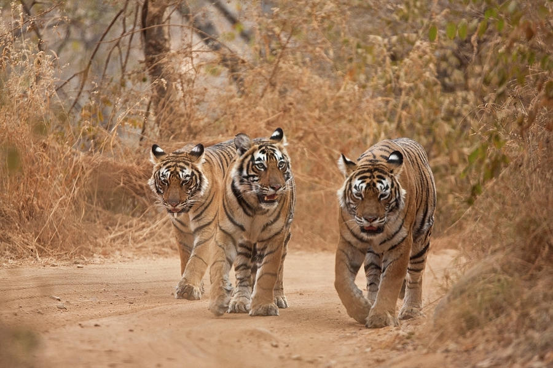

Lion Histroy

Lions are the only cats that live in groups, which are called prides. Prides are family units that may include up to three males, a dozen or so females, and their young. All of a pride's lionesses are related, and female cubs typically stay with the group as they age. Young males eventually leave and establish their own prides by taking over a group headed by another male.
The lion (Panthera leo) is a large cat of the genus Panthera, native to Africa and India. It has a muscular, broad-chested body; a short, rounded head; round ears; and a dark, hairy tuft at the tip of its tail. It is sexually dimorphic; adult male lions are larger than females and have a prominent mane. It is a social species, forming groups called prides. A lion's pride consists of a few adult males, related females, and cubs. Groups of female lions usually hunt together, preying mostly on medium-sized and large ungulates. The lion is an apex and keystone predator; although some lions scavenge when opportunities occur and have been known to hunt humans, lions typically do not actively seek out and prey on humans.
Tigar Histroy
The average lifespan of a tiger in the wild is about 11 years. In captivity their lifespan is about 20 to 25 years. Tigers can live in a range of environments, including the Siberian taiga, swamps, grasslands, and rainforests. They can be found anywhere from the Russian Far East to parts of North Korea, China, India, and Southwest Asia to the Indonesian island of Sumatra.
Tigers eat large prey animals like deer and wild pigs, though they make exceptions for some small animals, including porcupines. After consuming what they can of their prey, tigers hide animal carcasses from scavengers so they can return to them later.

Animal In India
Bengal Monitor